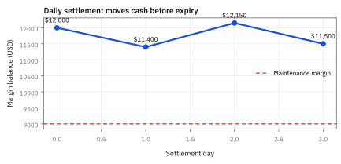
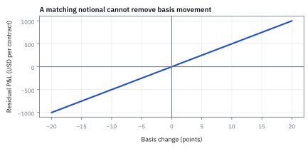

19.2 Marking-to-Market, Margin, and Basis Risk
futures ให้ผลรวมเท่ากับ forward แต่จ่ายเป็นเงินสดทุกเย็น ความต่างข้อเดียวนี้สร้างความเสี่ยงเรื่องเงินสด และ hedge ด้วยของที่ไม่ตรงกันยังเหลือ basis
คุณซื้อ ES หนึ่งสัญญาที่ 5,000 จุด จุดละ \$50 วางเงินประกันเริ่มต้น \$12,000 และบัญชีต้องไม่ต่ำกว่า \$9,000 (ตัวเลขสมมติเพื่อฝึกลงบัญชี ไม่ใช่อัตราจริงของตลาด) คืนนี้ราคาชำระออกมาที่ 4,988 เงินออกจากบัญชีเท่าไร ถ้าพรุ่งนี้ราคาชำระเป็น 4,938 ต้องโอนเงินเข้าเท่าไร เพื่อนบอกว่า “เติมแค่ \$100 ให้บัญชีกลับไปถึง \$9,000 ก็พอ” ถูกไหม?
ลองตอบก่อนเปิดเฉลย
คืนนี้เสีย $12\times\$50=\$600$ บัญชีเหลือ \$11,400 พรุ่งนี้ลงอีก 50 จุด เสีย \$2,500 เหลือ \$8,900 ต่ำกว่าเกณฑ์ \$9,000 กติกาคือต้องเติมกลับถึงเงินประกันเริ่มต้น จึงต้องโอน \$3,100 ไม่ใช่ \$100 ทั้งที่ยังไม่ได้ขายอะไรเลย futures เก็บกำไรขาดทุนเป็นเงินสดทุกเย็น ไม่รอวันหมดอายุ
ภาพรวมก่อนลงสูตร
ตอนหา ราคา forward จาก cost of carry เราตีมูลค่าของสัญญาระหว่างทางได้ แต่ค่านั้นสะสมเงียบ ๆ จนถึงวันหมดอายุ แล้วจ่ายกันก้อนเดียว ถ้าคู่สัญญาขาดทุนหนักระหว่างทาง เขาอาจหนีไปก่อนวันนั้น futures แก้ปัญหานี้ด้วยกติกาง่าย ๆ: ทุกเย็นตลาดประกาศราคาชำระ แล้วโอนส่วนที่เปลี่ยนจากเมื่อวานเป็นเงินสดทันที หนี้จึงไม่มีวันสะสมเกินหนึ่งวัน และมี clearinghouse ยืนเป็นคู่สัญญาให้ทุกคน
ราคาของความปลอดภัยนี้คือเงินสด เราต้องวางเงินประกัน และต้องเติมเงินเมื่อบัญชีต่ำกว่าเกณฑ์ แม้ว่าพอร์ตรวมจะไม่ได้ขาดทุนเลย หน้านี้ลงบัญชีกลไกนั้นทีละวัน พิสูจน์ว่าเงินรายวันรวมกันได้เท่า forward ดูว่าราคา futures บนต้นไม้คืออะไร แล้วไปที่เรื่อง hedge: ส่วนต่างระหว่างราคาของที่ถือกับราคา futures เรียกว่า basis และเป็นส่วนที่ hedge เอาออกไม่ได้
รูปด้านล่างคือโจทย์เปิดเรื่องทั้งก้อน: สองเย็นของบัญชี margin และจุดที่ถูกเรียกเงิน
รูป — สองเย็นของบัญชี margin และการเรียกเงิน
ศัพท์ที่ใช้ในหัวข้อนี้
- Mark-to-market
- ทุกสิ้นวัน ตลาดตีราคาทุกสัญญาด้วยราคาชำระของวันนั้น แล้วโอนส่วนต่างจากเมื่อวานเป็นเงินสด คนขาดทุนจ่าย คนกำไรรับ เหมือนปิดสัญญาเก่าแล้วเขียนสัญญาใหม่ทุกวัน มีไว้เพื่อไม่ให้หนี้ระหว่างคู่สัญญาสะสมจนใครหนีได้
- Settlement price
- ราคาที่ตลาดประกาศทุกวันเพื่อใช้คิดเงินรายวัน มักอิงราคาซื้อขายช่วงท้ายวัน ไม่จำเป็นต้องเท่ากับราคาที่เราซื้อขายจริง วันหมดอายุถูกกำหนดให้เท่ากับระดับดัชนี
- Initial margin
- เงินประกันที่ต้องวางตอนเปิดสัญญา เป็นกันชนรับขาดทุนรายวัน ไม่ใช่ราคาของสัญญา และไม่ใช่ขาดทุนสูงสุด
- Maintenance margin และ margin call
- ระดับขั้นต่ำของบัญชี ถ้ายอดต่ำกว่านี้หลังโอนเงินรายวัน โบรกเกอร์เรียกให้เติมเงินกลับถึง initial margin ภายในเวลาที่กำหนด ไม่เติมก็ถูกปิดสัญญา
- Clearinghouse
- ตัวกลางที่เป็นผู้ซื้อของผู้ขายทุกคน และเป็นผู้ขายของผู้ซื้อทุกคน ทำให้ไม่ต้องกังวลว่าคู่สัญญาจะหนี และเป็นผู้เก็บ margin ของทั้งตลาด
- Basis
- ราคาของที่ถือลบราคา futures ที่ใช้ hedge ถ้าของที่ถือคือของที่สัญญาอ้างอิงพอดี basis ต้องเป็นศูนย์ในวันหมดอายุ
- Basis risk
- ความเสี่ยงที่ basis ขยับระหว่างที่ hedge อยู่ ส่วนนี้ไม่หายไม่ว่าจะเลือกจำนวนสัญญาเท่าไร จึงต้องประเมินก่อนว่า hedge จะป้องกันได้แค่ไหน
สัญลักษณ์และหน่วย
| สัญลักษณ์ | ความหมาย | หน่วย |
|---|---|---|
| $N$ | จำนวนสัญญา ติดลบคือขาย | สัญญา |
| $M$ | ตัวคูณสัญญา ES | \$ ต่อจุด |
| $F_t$ | ราคาชำระของ futures วันที่ $t$ | จุด |
| $\Delta\Pi_t$ | เงินที่โอนเข้าหรือออกในวันที่ $t$ | \$ |
| $V_t,\ V_{\text{init}},\ V_{\text{mnt}}$ | ยอดบัญชี margin หลังโอน, initial margin, maintenance margin | \$ |
| $C_t$ | เงินที่ถูกเรียกให้เติมในวันที่ $t$ | \$ |
| $G_0$ | ราคา forward ที่ได้จาก cost of carry | จุด |
| $u,\ d,\ R,\ q$ | ตัวคูณขาขึ้น ขาลง ตัวคูณเงินฝากต่องวด และโอกาสตั้งราคาของ binomial tree | ไม่มีหน่วย |
| $S_t,\ B_t$ | ราคาของที่ถือ และ basis $S_t-F_t$ | จุด |
| $Q$ | ขนาดของที่ถือ คิดเป็นเงินต่อการขยับหนึ่งจุดของดัชนี | \$ ต่อจุด |
ขั้นที่ 1 — ลองด้วยมือ: สามวันของบัญชี margin
โจทย์ให้อะไรมาบ้าง: ซื้อ ES หนึ่งสัญญาที่ 5,000 บัญชีเริ่มที่ \$12,000 ราคาชำระสามวันถัดมาคือ 4,988, 5,003 และ 4,990 ทุกเย็นเทียบราคาชำระวันนี้กับของเมื่อวาน แล้วโอนส่วนต่างคูณ \$50
ราคาที่เราซื้อ 5,000 ถูกใช้แค่ในวันแรก หลังจากนั้นทุกวันเทียบกับราคาชำระของเมื่อวาน เพราะส่วนที่เปลี่ยนก่อนหน้านั้นถูกจ่ายไปแล้ว เงินจึงย้ายทีละก้อนเล็ก ๆ ทุกเย็น บัญชีต่ำสุดที่ \$11,400 ยังเหนือเกณฑ์ \$9,000 จึงไม่มีใครเรียกเงินเพิ่ม
คำตอบ: สามวันขาดทุนรวม \$500 แต่จ่ายเป็นสามก้อน −\$600, +\$750, −\$650 บัญชีจบที่ \$11,500
ตรวจเองใน 10 วินาที: ราคาจบที่ 4,990 ต่ำกว่าราคาซื้อ 10 จุด $10\times50=500$ และ $12{,}000-500=11{,}500$ ตรงกับบรรทัดสุดท้าย
รูป — ยอดบัญชี margin สามวัน

ยอดบัญชี margin ของสามวันข้างบน วันที่ 0 ถึง 3 คือ \$12,000, \$11,400, \$12,150 และ \$11,500 เส้นประแดงคือเกณฑ์ \$9,000 ยอดต่ำสุด \$11,400 ยังห่างเกณฑ์ \$2,400 หรือ 48 จุดของ ES จึงยังไม่มีการเรียกเงิน
ขั้นที่ 2 — กติกาเป็นสมการ และราคาที่ทำให้ถูกเรียกเงิน
ตารางสามวันเดินตามกติกาสามข้อ เขียนเป็นสมการแล้วเราตอบคำถามที่โต๊ะอยากรู้ได้ทันที โดยไม่ต้องไล่ทีละวัน: ราคาลงได้อีกเท่าไรก่อนถูกเรียกเงิน และถูกเรียกแล้วต้องเติมเท่าไร สามบรรทัดแรกเป็นนิยามตามกติกาของตลาด บรรทัดที่เหลือใส่ตัวเลขของโจทย์เปิดเรื่อง
บรรทัดที่สามคือจุดที่เพื่อนพลาด เมื่อยอดต่ำกว่าเกณฑ์ ต้องเติมกลับถึงเงินประกันเริ่มต้น ไม่ใช่แค่ถึงเกณฑ์ ตลาดทำแบบนี้เพื่อให้กันชนกลับมาเต็ม ถ้าเติมแค่ถึง \$9,000 ราคาขยับลงอีกนิดเดียวก็ถูกเรียกอีก
บรรทัดสุดท้ายถามว่าราคาต่ำแค่ไหนจึงเริ่มถูกเรียก ก่อนมีการเติมเงิน ยอดบัญชีคือ $12{,}000+50(F-5{,}000)$ ซึ่งต่ำกว่า 9,000 เมื่อ $F$ ต่ำกว่า 4,940 คือห่างจุดซื้อแค่ 60 จุด หรือ 1.2% สัญญาหนึ่งคุมดัชนีมูลค่า $5{,}000\times50=\$250{,}000$ ด้วยเงินประกัน \$12,000 คือ 20.8 เท่า นี่คือ leverage ที่ทำให้ futures ใช้เงินน้อย แต่ดัชนีขยับ 1.2% ก็กินกันชนหมด
ขั้นที่ 3 — เงินรายวันรวมกันได้เท่ากับ forward
futures จ่ายเป็นก้อนเล็ก ๆ ทุกวัน ส่วน forward จ่ายก้อนเดียวตอนจบ คำถามที่ต้องตอบก่อนเอา futures ไปใช้แทน forward คือยอดรวมต่างกันไหม บวกเงินรายวันทุกวันเข้าด้วยกันแล้วดู
ในวงเล็บ $F_1$ ถูกบวกแล้วลบ $F_2$ ก็เช่นกัน ทุกตัวกลางหักล้างกันเป็นคู่ เหลือแค่ตัวสุดท้ายลบตัวแรก ในวันหมดอายุราคา futures ต้องเท่ากับดัชนี เพราะสัญญาที่ส่งมอบวันนี้คือของวันนี้ ถ้าไม่เท่า ก่อนหมดเวลาไม่กี่วินาทีใครก็ซื้อตัวถูกขายตัวแพงแล้วเก็บส่วนต่างได้ ยอดรวมจึงเท่ากับ $S_n-F_0$ ของ forward พอดี
ข้อแม้คือยังไม่นับดอกเบี้ย เงิน \$600 ของวันแรกออกจากกระเป๋าตั้งแต่วันแรก ไม่ใช่ตอนจบ ความต่างระหว่าง futures กับ forward จึงเหลือเรื่องเดียวคือเวลาของเงิน ซึ่งสองขั้นถัดไปดูต่อ
รูป — เงินรายวันสามก้อน เทียบ forward ก้อนเดียว
ขั้นที่ 4 — “ราคา” futures บนต้นไม้คืออะไร และทำไมเท่ากับ forward เมื่อดอกเบี้ยคงที่
ความเข้าใจผิดที่พบบ่อยคือคิดว่า $F_t$ คือเงินที่ต้องจ่ายเพื่อซื้อ futures หนึ่งสัญญา ไม่ใช่ futures เข้าได้ฟรีทุกเวลา $F_t$ มีไว้คำนวณเงินรายวันเท่านั้น futures จึงเป็นของที่มีค่าศูนย์เสมอ และจ่าย “ปันผล” $F_{t+1}-F_t$ ทุกงวด ใช้ binomial tree ตั้งเงื่อนไขค่าศูนย์ แล้วแก้หาราคา ตัวอย่าง: หุ้น \$100 งวดหน้าขึ้นเป็น 110 หรือลงเป็น 90 ($u=1.1$, $d=0.9$) เงินฝากโตงวดละ 2% ($R=1.02$) ไม่มีปันผล futures หมดอายุในสองงวด
บรรทัดแรกคือค่าวันนี้ของ futures: เงินที่จ่ายงวดหน้าเฉลี่ยด้วยโอกาสตั้งราคา $q$ แล้วคิดลดด้วย $R$ ต้องได้ศูนย์ จังหวะที่น่าสนใจคือ $R$ หายไปเลย เพราะศูนย์หารด้วยอะไรก็เป็นศูนย์ ราคา futures จึงเป็นค่าเฉลี่ยธรรมดาของราคางวดหน้า ไม่มีการคิดลด แล้วทำซ้ำทีละงวดด้วย tower property (ค่าเฉลี่ยของค่าเฉลี่ยแบบมีเงื่อนไขคือค่าเฉลี่ยเดิม) จนถึงวันหมดอายุที่ $F_n=S_n$ ได้ $F_t=\mathbb E^{\mathbb Q}_t[S_n]$ ราคา futures จึงเป็น martingale ภายใต้ $\mathbb Q$
ตัวเลขทำย้อนจากปลายทาง 121, 99 และ 81 ได้ 112.2 กับ 91.8 ซึ่งคือ $110(1.02)$ กับ $90(1.02)$ แล้วย้อนอีกครั้งได้ 104.04 ราคา forward จาก cost of carry ก็เป็น $G_0=\mathbb E^{\mathbb Q}_0[S_n]=100(1.02)^2$ เหมือนกัน เมื่อดอกเบี้ยคงที่ futures กับ forward ราคาเดียวกันทุกจุดของต้นไม้ ถ้าหุ้นจ่ายปันผล สูตร $F_0=\mathbb E^{\mathbb Q}_0[S_n]$ ยังใช้ได้ ปันผลเข้ามาทาง $q$ เท่านั้น ซึ่งหน้า ปันผลในสูตรราคา ทำให้ดู
รูป — ต้นไม้ราคาหุ้นกับราคา futures สองงวด
ขั้นที่ 5 — เมื่อดอกเบี้ยขยับไปพร้อมราคา futures ไม่เท่ากับ forward
โจทย์ให้อะไรมาบ้าง: สมมติถือ futures ฝั่งซื้อหนึ่งหน่วย วันแรกราคาขึ้นหรือลง 10 จุด ด้วยน้ำหนักเท่ากัน ถ้าราคาขึ้น ดอกเบี้ยขึ้นเป็น 6% ต่อปี ถ้าราคาลง ดอกเบี้ยลงเป็น 2% ต่อปี เหลือเวลาอีก 1 ปีถึงวันหมดอายุ และหลังจากนั้นราคาไม่ขยับอีก เทียบกับ forward ที่ได้ ±10 จุดก้อนเดียวในวันหมดอายุ
ขา futures ได้ +10 เป็นเงินสดตั้งแต่วันแรก แล้วเอาไปฝากที่ 6% ครบปีเป็น 10.6184 ส่วนกรณีที่เสีย 10 ต้องกู้มาจ่าย แต่กู้ได้ถูกที่ 2% ครบปีเป็นหนี้ 10.2020 เฉลี่ยสองกรณีได้เปรียบ 0.2082 จุด ส่วน forward ได้ +10 หรือ −10 ตอนจบ เฉลี่ยเป็นศูนย์
ทั้งสองสัญญาเข้าได้ฟรี ถ้าขาซื้อ futures ได้เปรียบแบบนี้ ตลาดต้องตั้งราคา futures ให้สูงกว่า forward เล็กน้อยเพื่อลบความได้เปรียบนั้น ถ้าดอกเบี้ยขยับสวนทางกับราคา ทุกอย่างกลับด้าน ต้นไม้ในขั้นก่อนให้สองราคาเท่ากันเพราะ $R$ คงที่ ซึ่งเป็นข้อสมมติ ไม่ใช่ความจริงทั่วไป กับ ES อายุไม่กี่เดือนส่วนนี้เล็กมาก แต่กับ futures ของอัตราดอกเบี้ยอายุยาว (ดู zero rate และ forward rate) มันใหญ่พอที่โต๊ะต้องปรับ
คำตอบ: ในตัวอย่างนี้ขาซื้อ futures ได้เปรียบ forward เฉลี่ย 0.21 จุด ราคา futures จึงต้องสูงกว่าราคา forward เล็กน้อย
ตรวจเองใน 10 วินาที: ดอกเบี้ยของสองกรณีต่างกัน $6\%-2\%=4\%$ ต่อปีบนเงิน 10 จุด คือ 0.4 จุด แต่ละกรณีมีน้ำหนักครึ่งหนึ่ง จึงได้ราว 0.2
ขั้นที่ 6 — basis ของดัชนีเดียวกันหดเป็นศูนย์ แต่ของที่ใช้แทนไม่ต้องหด
คนที่ hedge ถือของจริงอยู่แล้วและขาย futures ไว้ ความต่างระหว่างสองราคานี้คือสิ่งที่ hedge ไม่ได้ จึงต้องรู้ก่อนว่ามันเดินอย่างไร บรรทัดแรกเป็นนิยาม บรรทัดที่สองใช้ fair value $F_t=S_te^{r(T-t)}$ กับ ES เทียบดัชนีของมันเอง (ไม่มีปันผล ดอกเบี้ย 5%) แล้วดูเมื่อเวลาเหลือ 0.5, 0.25 และ 0 ปี โดยให้ดัชนีอยู่ที่ 5,000
basis ติดลบเพราะ futures แพงกว่าดัชนีเท่าดอกเบี้ยที่เหลือต้องจ่าย และหดเข้าหาศูนย์ตามเวลาแบบที่รู้ล่วงหน้า ส่วนนี้จึงไม่ใช่ความเสี่ยง มันคือดอกเบี้ยที่คนขาย futures ได้รับทีละน้อย (ถ้ามีปันผลมากกว่าดอกเบี้ย basis จะเป็นบวกแทน)
ความเสี่ยงจริงมาจากสองแหล่ง: ราคา futures เบี่ยงจาก fair value ในระยะสั้น และของที่ถือไม่ใช่ดัชนี เช่นกองทุนหุ้นเทคโนโลยีที่ hedge ด้วย ES basis ของกรณีหลังไม่มีอะไรบังคับให้เป็นศูนย์ในวันหมดอายุ
รูป — basis ของดัชนีเดียวกัน เทียบของที่ใช้แทน
ขั้นที่ 7 — แยกกำไรขาดทุนหลัง hedge: ส่วนที่ขนาดแก้ได้ กับส่วนที่แก้ไม่ได้
ถือกองทุน \$250,000 ที่เดินตามดัชนีโดยประมาณ ขยับ $250{,}000/5{,}000=\$50$ ต่อจุดของดัชนี จึงให้ $Q=50$ แล้วขาย ES หนึ่งสัญญา ($N=-1$) วันหนึ่ง futures ลง 40 จุด แต่กองทุนลงเท่ากับ 42 จุดของดัชนี เพื่อดูว่า hedge เอาอะไรออกไปได้ เขียนกำไรขาดทุนรวม แล้วแทน $\Delta S=\Delta B+\Delta F$ ซึ่งเป็นแค่นิยามของ basis ที่ย้ายข้าง
การจัดกลุ่มใหม่ในบรรทัดที่สามคือหัวใจของขั้นนี้ ก้อนที่สองคูณการขยับของ futures ด้วย $Q+NM$ ถ้าเลือกจำนวนสัญญาให้ $NM=-Q$ ก้อนนี้หายหมด การเลือกจำนวนสัญญาให้พอดีเมื่อพอร์ตไม่ได้เดินเท่าดัชนีคืองานของ การ hedge ด้วย ES ก้อนแรก $Q\,\Delta B$ ไม่มี $N$ อยู่เลย เลือกจำนวนสัญญาเท่าไรก็ไม่หาย นี่คือ basis risk
ในตัวอย่าง ขนาดพอดีแล้ว ($50-50=0$) ถ้าไม่ hedge กองทุนเสีย \$2,100 เมื่อ hedge แล้วเหลือเสีย \$100 ซึ่งคือ basis 2 จุดคูณ \$50
รูป — ขาดทุนของกองทุน กำไรของ ES และสิ่งที่เหลือ
รูป — กำไรขาดทุนที่เหลือหลัง hedge ขึ้นกับ basis

แกนนอนคือการเปลี่ยนของ basis −20 ถึง +20 จุด แกนตั้งคือกำไรขาดทุนที่เหลือหลัง hedge ต่อสัญญา $50\,\Delta B$ จาก −\$1,000 ถึง +\$1,000 ขนาด hedge ที่พอดีลบก้อน $(Q+NM)\,\Delta F$ ได้หมด แต่ขยับเส้นนี้ไม่ได้เลย จุด −2 บนแกนนอนคือ −\$100 ของตัวอย่างกองทุนข้างบน
ขั้นที่ 8 — hedge ถูกทิศ แต่เงินสดหมดก่อน
โจทย์ให้อะไรมาบ้าง: ถือหุ้น \$250,000 ที่เดินตามดัชนี และขาย ES หนึ่งสัญญาที่ 5,000 ไว้ hedge บัญชี margin เริ่ม \$12,000 เกณฑ์ \$9,000 ดัชนีขึ้นวันละ 25 จุดติดกัน 20 วันจนถึง 5,500 หุ้นได้กำไร แต่ขา ES เสียเงินสดทุกวัน
ทุกสามวันบัญชีลด \$3,750 จนต่ำกว่าเกณฑ์ ถูกเรียกให้เติมกลับถึง \$12,000 วันที่ 3, 6, 9, 12, 15 และ 18 รวมหกครั้ง วันที่ 19 กับ 20 ลดอีกสองวันเหลือ \$9,500 เงินที่ออกจากกระเป๋าทั้งหมดคือเงินประกันบวกเงินที่เติม ลบยอดที่เหลือ ได้ \$25,000 เท่ากับ $500\times50$ ซึ่งคือขาดทุนของ ES และเท่ากับกำไรของหุ้นพอดี
ปัญหาคือกำไรของหุ้นเป็นแค่ตัวเลขบนกระดาษ ส่วนเงินที่ต้องเติมต้องเป็นเงินสดภายในวัน ถ้าหาไม่ทัน โบรกเกอร์ปิด ES ให้ hedge หายไปตรงยอดของการวิ่งขึ้น และความเสี่ยงที่ตั้งใจปิดก็กลับมาทั้งก้อน
คำตอบ: ต้องหาเงินสดเพิ่ม \$22,500 ใน 20 วัน ทั้งที่พอร์ตรวมไม่ได้ขาดทุนเลย
ตรวจเองใน 10 วินาที: ขาดทุนของ ES $500\times50=25{,}000$ ส่วนที่บัญชีรับไว้เองโดยไม่ต้องเติมคือ $12{,}000-9{,}500=2{,}500$ ที่เหลือ $25{,}000-2{,}500=22{,}500$ ต้องเติมจากข้างนอก
รูป — ฟันเลื่อยของบัญชี margin ระหว่างตลาดวิ่งขึ้น 20 วัน
ขั้นที่ 9 — ต่อยอด: option บน futures ใช้ต้นไม้ราคา futures ได้ทันที
โจทย์ให้อะไรมาบ้าง: option ที่ซื้อขายมากที่สุดหลายตัวในโลก เช่นบนดัชนี S&P 500, Eurostoxx 50, FTSE 100 และ Nikkei 225 อ้างอิง futures ไม่ใช่ดัชนีโดยตรง ลองตั้งราคา put แบบยุโรปบน futures: ดัชนี $S_0=100$ ต้นไม้ $n=10$ งวด ดอกเบี้ย $r=2\%$ ปันผลเป็นอัตรา $c=1\%$ ต่อปี ความผันผวน $\sigma=20\%$ futures กับ option หมดอายุพร้อมกันที่ $T=0.5$ ปี strike 100 ($\Delta t=T/n=0.05$)
ขั้นตอนมีสองรอบ รอบแรกสร้างต้นไม้ราคา futures แบบที่ทำกับต้นไม้สองงวดข้างบน: ปลายทาง $F_n=S_n$ แล้วย้อนด้วยค่าเฉลี่ยถ่วง $q$ โดยไม่คิดลด ได้ $F_0=100.50$ ซึ่งตรงกับ $S_0e^{(r-c)T}$ จาก cost of carry รอบสองตั้งราคา put ที่ปลายทาง $\max(100-F_n,0)$ แล้วย้อนด้วย $q$ เหมือนเดิม แต่คราวนี้คิดลดด้วย $e^{r\Delta t}$ ทุกงวด เพราะ put ต้องจ่ายเงินซื้อ ไม่ได้เข้าฟรีแบบ futures ผลคือ 5.21 (โค้ดท้ายหน้าทำทั้งสองรอบ)
ปันผล $c$ เข้ามาทาง $q$ อย่างเดียว ตรงกับที่ต้นไม้สองงวดบอก ในทางปฏิบัติ option ที่มีสภาพคล่องไม่ต้องใช้ model ตั้งราคา ตลาดบอกราคามาเอง ซึ่งเท่ากับบอกความผันผวน $\sigma$ ที่ซ่อนอยู่ model จำเป็นตอน hedge และตอนตั้งราคาของที่ไม่มีใครซื้อขาย
คำตอบ: ราคา futures วันนี้ 100.50 และ put strike 100 บน futures มีค่า 5.21
ตรวจเองใน 10 วินาที: $q$ ต้องอยู่ระหว่าง 0 กับ 1 และใกล้ 0.5 เมื่อ $\Delta t$ เล็ก ได้ 0.494 ผ่าน และ $F_0$ สูงกว่า 100 เพราะดอกเบี้ย 2% มากกว่าปันผล 1%
ความผิดที่ให้คำตอบผิดแบบเงียบ ๆ
เติมเงินแค่ถึงเกณฑ์: ในโจทย์เปิดเรื่องต้องโอน \$3,100 ไม่ใช่ \$100 ถ้าเตรียมเงินไว้แค่ส่วนที่ขาดจากเกณฑ์ สัญญาถูกปิดตั้งแต่วันแรกที่ถูกเรียก
คิดว่า margin คือขาดทุนสูงสุด: ดัชนีลง 5% คือ 250 จุด เสีย $250\times50=\$12{,}500$ มากกว่าเงินประกันทั้งก้อน \$12,000 margin เป็นแค่กันชนของหนึ่งถึงสองวัน
เทียบกับราคาที่ซื้อทุกวัน: ถ้าคิดเงินรายวันเทียบ 5,000 ทุกวันในสามวันแรก จะได้ −600, +150, −500 รวม −950 ซึ่งผิด เพราะนับการขยับของวันก่อนซ้ำ ของจริงคือ −500
คิดว่าราคา futures คือเงินที่ต้องจ่าย: ES ที่ 5,000 ไม่ได้แปลว่าต้องจ่าย \$250,000 เข้าสัญญา เข้าได้ฟรี เงินที่ต้องมีคือเงินประกัน \$12,000 กับเงินรายวัน และเพราะเข้าฟรี ห้ามคิดลดตอนย้อนต้นไม้ราคา futures: บนต้นไม้หนึ่งงวดของหุ้น 100 ราคา futures คือ $0.6(110)+0.4(90)=102$ ถ้าเผลอหารด้วย $R=1.02$ จะได้ 100 ซึ่งคือราคาหุ้นวันนี้ ไม่ใช่ราคา futures
นับกำไรบนกระดาษเป็นเงินสด: ตลาดวิ่งขึ้น 20 วันต้องหาเงินสด \$22,500 ทั้งที่กำไรของหุ้นเท่ากับขาดทุนของ ES พอดี
hedge ด้วยของที่ใช้แทนแล้วคาดว่า basis จะหายเอง: ในรูป basis ของที่ใช้แทน เส้นส้มจบที่ −13.3 จุด ไม่ใช่ศูนย์ ส่วนนั้นเป็นกำไรหรือขาดทุนของเราเอง
ใช้ทำอะไรบนโต๊ะจริง
โต๊ะที่ใช้ futures hedge มีคนดูแลเงินสดโดยเฉพาะ ทุกเช้าคำนวณว่าถ้าราคาขยับแรงเท่าวันที่แย่ที่สุดในอดีต จะถูกเรียกเงินเท่าไร แล้วกันเงินสดหรือวงเงินกู้ไว้ก่อน กองทุนที่ถือหุ้นแต่ hedge ด้วย futures จึงถือเงินสดส่วนหนึ่งไว้เสมอ และ clearinghouse ขึ้น margin ในช่วงที่ตลาดผันผวน ซึ่งเป็นจังหวะที่หาเงินยากที่สุด
ตัวอย่างที่ถูกยกบ่อยคือ Metallgesellschaft ของเยอรมนีในปี 1993 ที่ hedge สัญญาขายน้ำมันระยะยาวด้วย futures ระยะสั้น พอราคาน้ำมันลง ขา futures ถูกเรียกเงินทันทีขณะที่กำไรของสัญญาขายยังไม่เป็นเงินสด สุดท้ายต้องปิดสถานะและบันทึกขาดทุนราว \$1.3 พันล้าน เป็นฟันเลื่อยแบบเดียวกับรูปด้านบนในขนาดที่ใหญ่กว่ามาก ก่อนเปิด hedge ด้วยของที่ไม่ตรงกับดัชนี โต๊ะวัดว่า basis ในอดีตขยับได้แค่ไหน แล้วบอกเจ้าของเงินล่วงหน้าว่า hedge นี้จะเหลือความเสี่ยงประมาณเท่าไร ไม่ใช่สัญญาว่าจะเป็นศูนย์
โจทย์ตรวจความเข้าใจ
1. ขาย ES สองสัญญาที่ 5,000 เงินประกันเริ่ม \$24,000 เกณฑ์ \$18,000 ราคาชำระสองวันถัดมาคือ 5,030 และ 5,070 แต่ละวันเงินออกเท่าไร ถูกเรียกเงินไหม และราคาเท่าไรที่เริ่มถูกเรียก?
เฉลย
ฝั่งขายเสียเมื่อราคาขึ้น วันแรก $-2(50)(30)=-\$3{,}000$ บัญชีเหลือ \$21,000 วันที่สอง $-2(50)(40)=-\$4{,}000$ เหลือ \$17,000 ต่ำกว่า \$18,000 ต้องเติม $24{,}000-17{,}000=\$7{,}000$ กันชนคือ $24{,}000-18{,}000=6{,}000$ หารด้วย $2\times50=100$ ได้ 60 จุด จึงเริ่มถูกเรียกเมื่อราคาชำระสูงกว่า 5,060
2. ซื้อ ES สามสัญญา ราคาชำระเป็น 5,000 → 5,020 → 4,970 → 5,010 → 5,045 เงินรายวันเป็นเท่าไร และรวมได้เท่าไร ตรวจด้วยการหักล้างของผลรวมรายวัน
เฉลย
$150\times20=+3{,}000$, $150\times(-50)=-7{,}500$, $150\times40=+6{,}000$, $150\times35=+5{,}250$ โดย $150=3\times50$ รวม \$6,750 ตรงกับ $150(5{,}045-5{,}000)=150\times45=6{,}750$ แต่ระหว่างทางวันที่สองต้องจ่าย \$7,500 ทั้งที่จบด้วยกำไร
3. ถือกองทุน \$500,000 ที่ขยับ \$100 ต่อจุดของดัชนี ขาย ES สองสัญญา วันหนึ่ง futures ลง 30 จุด กองทุนลงเท่ากับ 33 จุด กำไรขาดทุนก่อนและหลัง hedge เป็นเท่าไร?
เฉลย
ก่อน hedge $100(-33)=-\$3{,}300$ หลัง hedge $-3{,}300+(-2)(50)(-30)=-3{,}300+3{,}000=-\$300$ ขนาดพอดีเพราะ $Q+NM=100-100=0$ ที่เหลือคือ $Q\,\Delta B=100(-3)=-\$300$ จาก basis ที่ขยับ 3 จุด
4. บนต้นไม้หนึ่งงวด หุ้น 50 ขึ้นเป็น 60 หรือลงเป็น 45 ดอกเบี้ยต่องวด $R=1.04$ ไม่มีปันผล ราคา futures ที่หมดอายุงวดหน้าเป็นเท่าไร?
เฉลย
$u=1.2$, $d=0.9$ ได้ $q=(1.04-0.9)/(1.2-0.9)=0.14/0.30=0.4667$ ราคา futures คือค่าเฉลี่ยถ่วงโดยไม่คิดลด $0.4667(60)+0.5333(45)=28+24=52$ ตรงกับ forward $50(1.04)=52$
คำนวณซ้ำด้วย JavaScript
เปิดดูโค้ด
const {exp, sqrt, max} = Math;
// Daily settlement of N contracts (N < 0 = short); below maintenance, top up to initial.
function settle(prices, N, M, initial, maintenance) {
let balance = initial, paidIn = 0, calls = 0;
for (let t = 1; t < prices.length; t++) {
balance += N * M * (prices[t] - prices[t - 1]);
if (balance < maintenance) { paidIn += initial - balance; balance = initial; calls++; }
}
return {balance, paidIn, calls};
}
// Futures lattice: F_n = S_n, then F_t = q F_up + (1 - q) F_down, no discounting.
function futuresLattice(S0, u, d, q, n) {
let F = [];
for (let j = 0; j <= n; j++) F.push(S0 * u ** j * d ** (n - j));
const last = F.slice();
for (let t = n - 1; t >= 0; t--) F = F.slice(1).map((up, j) => q * up + (1 - q) * F[j]);
return {F0: F[0], last};
}
// European put on futures: payoff at n, step back with q AND discount by R each step.
function putOnFutures(S0, n, r, c, sigma, T, K) {
const dt = T / n, u = exp(sigma * sqrt(dt)), d = 1 / u, R = exp(r * dt);
const q = (exp((r - c) * dt) - d) / (u - d);
const {F0, last} = futuresLattice(S0, u, d, q, n);
let P = last.map(f => max(K - f, 0));
for (let t = n - 1; t >= 0; t--) P = P.slice(1).map((up, j) => (q * up + (1 - q) * P[j]) / R);
return {u, d, q, F0, put: P[0]};
}
console.log('3 days', settle([5000, 4988, 5003, 4990], 1, 50, 12000, 9000));
console.log('hook', settle([5000, 4988, 4938], 1, 50, 12000, 9000));
console.log('rally', settle(Array.from({length: 21}, (_, k) => 5000 + 25 * k), -1, 50, 12000, 9000));
console.log('trigger price', 5000 - (12000 - 9000) / 50);
console.log('two-step futures', futuresLattice(100, 1.1, 0.9, 0.6, 2).F0);
console.log('rate tilt', ((10 * exp(0.06) - 10 * exp(0.02)) / 2).toFixed(4));
console.log('basis', [0.5, 0.25, 0].map(tau => (5000 - 5000 * exp(0.05 * tau)).toFixed(2)));
console.log('hedged', 50 * (-42) + (-1) * 50 * (-40));
console.log('put on futures', putOnFutures(100, 10, 0.02, 0.01, 0.2, 0.5, 100));สิ่งที่ควรตอบได้หลังอ่าน
- futures โอน $NM(F_t-F_{t-1})$ เป็นเงินสดทุกเย็น เทียบกับราคาชำระของเมื่อวาน ไม่ใช่ราคาที่ซื้อ
- บัญชีต่ำกว่าเกณฑ์ต้องเติมกลับถึง initial margin: ในโจทย์เปิดเรื่องคือ \$3,100 ไม่ใช่ \$100 และ ES ขยับแค่ 60 จุด (1.2%) ก็ถูกเรียก
- เงินรายวันรวมกันได้ $NM(S_T-F_0)$ เท่า forward เพราะพจน์กลางหักล้างกันและ $F_T=S_T$ ต่างกันแค่เวลาของเงิน
- futures เข้าฟรีเสมอ ราคาของมันจึงเป็น martingale $F_t=\mathbb E^{\mathbb Q}_t[S_n]$ เท่ากับ forward เมื่อดอกเบี้ยคงที่ (104.04 บนต้นไม้) และแพงกว่าเล็กน้อยเมื่อดอกเบี้ยขยับตามราคา
- หลัง hedge เหลือ $Q\,\Delta B+(Q+NM)\,\Delta F$ ขนาดสัญญาแก้ได้แค่ก้อนหลัง ก้อน basis ยังอยู่ และ hedge ที่ถูกทิศก็ยังต้องใช้เงินสด (\$22,500 ใน 20 วันที่ตลาดวิ่งขึ้น)
หน้าถัดไป การ hedge ด้วย ES futures ใช้สูตรแยกกำไรขาดทุนนี้กับพอร์ตหุ้นจริงที่ไม่ได้เดินเท่าดัชนี: ต้องขาย ES กี่สัญญาเมื่อพอร์ตมี beta ไม่เท่ากับหนึ่ง และความเสี่ยงที่เหลือใหญ่แค่ไหน